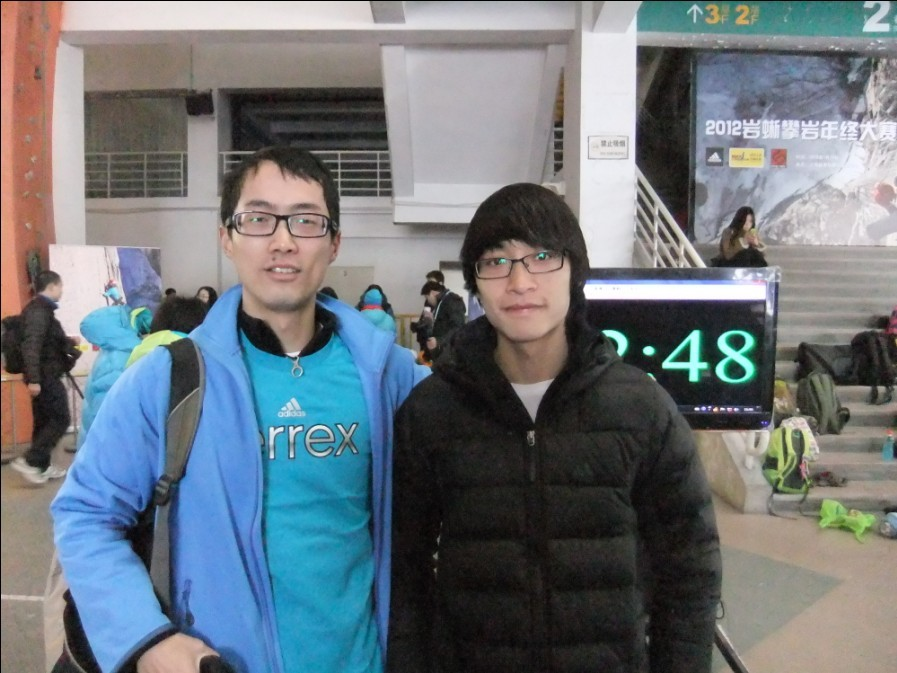

发信人: billyxs (into the wild), 信区: outdoor
标 题: 岩蜥2012年终赛归来@万体馆
发信站: 饮水思源 (2013年01月20日00:02:02 星期天)
此次2012岩蜥年终赛比赛分为新手、甲b、甲a、专业几个级别。将分别叙述偶的感官。
新手赛：唯一采取难度线路形式的比赛。因为一些原因没有看到敏妹的全程攀爬，不过目
睹了他掉落的那一下，赛后讨论也是经验不丰富被卡在一个较远手点的位置上纠结过久。
男子甲b抱石（也就是偶参加的）：线路总体偏简单，四条线依偶的感觉分别是：V2~V3,
V1~V2, V2~V3, V1~V2, 偶的成绩：T0B1, T1B1, T3B3, T1B1（TmBn表示第m把top，第n把
首次拿到bonus；0表示失败），在全部40名选手中排名中游；有8名选手四条线都是T1B1。
结合视频细说（感谢敏妹拍摄！）：
一上来的失利说明了偶在热身方面的一贯欠缺，周三在岩舞磕的太厉害没缓过来也可能是
原因之一。觉得抱石的热身一定不要收敛，练到小臂僵硬都可以；毕竟抱石强度大但对耐
力要求不高，身体灵活舒展性极为关键。
技术上，第一条的失利来自于对于左上方手点理解的失误（如视频所示）。手点并不友好
，以为要用手指捏住但太难，其实应该用整个手掌撑住，也需要之前一个小动态来保证到
达能撑住的位置。也可怪罪为经验不够丰富，或者因有希望拿奖心态产生变化整个不自然
。
第一条放弃之后小臂仍非常僵硬，感觉不妙却被这条难度不大的平衡线给救了。关键是骑
在造型上稳定。另外没可能拿奖之后心态也放松了很多。
第三条线是最好玩的：大动态起步+中间闪转腾挪找平衡+动态结束。起步时脑子有点困，
试了三次大动态才抓住（敏妹没拍到），之后各种纠结挪动，几次几乎感觉要掉出来都撑
住了，之后试着调整呼吸平静心理，身体平衡奇迹般的变得容易。最后的扭身动态也是脑
子不清醒，但是想到这把搞不掉再来一次也没力气了，竟然牢牢hold住。
小斜壁上的小线路，没有太多挑战除了偶已经没力气。整个动作非常僵硬，几欲掉下来。
Sharma那句”my body just wanna let go… I like this long fight”形象附体。勉强
完成。
女子甲b的比赛没有看。女子甲a的线路造型丰富，使用蛮力不多，但是各种平衡技巧对柔
韧的强调凸显。男子甲a就是女甲a去掉一些点… 暴力与平衡并存；大冬瓜背负脚伤的表现
依旧抢眼。女子专业使用的是男甲a路线，而除了国家队一姐（貌似还是高二学生？）之外
其他俩妹子都被磕的很惨。也让偶感慨于国家队与民间高手的差距也无法足够填补男女攀
岩风格的差别。
男子专业比赛的定线用了半个多小时，天晚天凉。人们多余的等待完全是值得的，瞿仔、
小树、汤老大、阿邦们的表现引来阵阵惊呼：指力，动态，平衡，精准，都是超级的。偶
实力有限无法点评只能跟着吼叫；也没有录视频而是全身投入观察学习中。期待之后专业
摄影师的剪辑。
另，敏妹rp爆发抽奖拿到德国牌子8字一枚，偶也完成了找阿邦、瞿仔、阿文合影的愿望，
给力！
附，与抱石、难度、徒手、定线无所不能的超帅闷骚阿文合影：
 screen.width - 200){this.width = screen.width - 200}">
--
小小的岩壁为什么那么吸引人？因为它平衡了人的肢体在不同情况下的姿势处理，平衡了人体各部分的肌肉运用，平衡了地心引力与向上绝对力量的关系，平衡了人后天的自大、自信与先天的畏难和恐惧，平衡了探索的激情与现实的冷静，平衡了严谨与浪漫的关系。攀岩里有东西方哲学，贴在岩壁上才感受得到。
※ 来源:·饮水思源 bbs.sjtu.edu.cn·[FROM: 219.228.113.250]
|